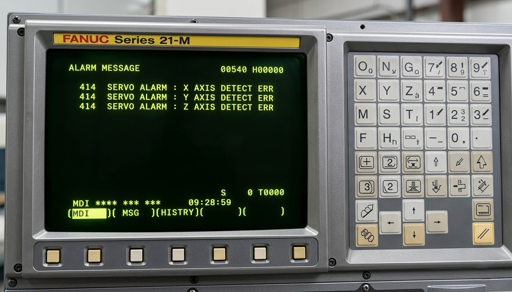

La alarma Fanuc 414: DIGITAL SERVO ALARM

El control CNC muestra la alarma 414, indica que el eje no alcanza la posición programada, generando un error de seguimiento.Este error aparece cuando la diferencia entre posición real y teórica supera el límite permitido."
Estado de la máquina: Parada.
Causa: Fallo en servo o comunicación.
Solución rápida: Revisar drive, motor y cableado.
Nivel de urgencia: Alta.

Hardware relacionado con el Error Fanuc 414: Localización de los servosistemas afectados. En este punto se debe verificar el código numérico en el panel de STATUS de cada módulo amarillo para determinar cuál de los tres ejes está enviando la señal de error de detección al control principal
La alarma Fanuc 414 indica un fallo en el sistema de servo digital. Ignorar este error puede provocar daños progresivos en el servo amplifier, el servomotor o el sistema de control.
"Forzar el funcionamiento con un fallo de servo puede provocar averías irreversibles en el amplificador o en el motor."
Consecuencia: Desde pérdida de precisión y movimientos erráticos hasta la rotura completa del servo amplifier o del servomotor, incrementando considerablemente el coste de reparación.
Se recomienda detener la máquina y contactar con servicio técnico para realizar un diagnóstico completo.
🛠️ ¿Necesita Asistencia Técnica?
Evite pérdidas de producción. Podemos identificar rápidamente el origen del problema y aplicar la solución adecuada.
📞 No dude en ponerse en contacto con nosotros.